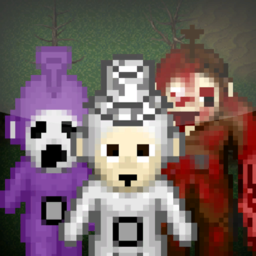
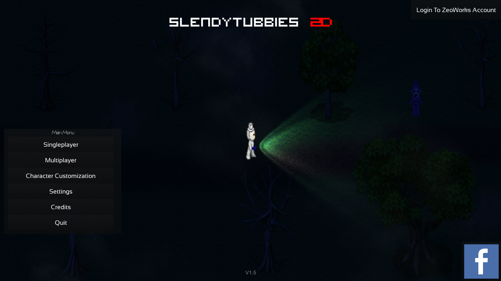

Play Slendytubbies like never before with brand new maps and monsters!
- Developer: ZeoWorks
- Engine: Unity 5
- Platform: Microsoft Windows, OS X, Android, iOS, Roblox (port only)
- Release: August 31, 2015
- Genre: Survival Horror, Item Collecting
- Language: English, Spanish
- Canon: No
- Previous installment: Dipsy's Workshop, Slendytubbies III (demo)
- Next installment: Slendytubbies: Anniversary Edition


Slendytubbies 2D (acronymed to S2D or ST2D) is a two-dimensional pixelated remake of the Slendytubbies series. A unique Slendytubbies game, it shifts away from the usual three-dimensional gameplay of the series and translates it into 2D, and introduces new characters that would make their way to the campaign of Slendytubbies III.
Gameplay
Slendytubbies 2D's gameplay is very similar to it's predecessors except the fact that the game plays from a 2D top-down perspective; hence the name Slendytubbies 2D. However, the game features more than just being 2D, such as more new maps and monsters, similarly to Slendytubbies 2. The game's enemy behavior varies between maps, unlike most games, where a monster can either be a Stalker or Tracker type. The behavior of the Stalkers is similar to the Slender Man in Slender: The Eight Pages, where the monster constantly "stalks" the player throughout the game, and are only revealed when the player looks in their direction. Trackers act very similar to Slendytubbies' Tinky Winky, albeit the player can look safely in their direction without being harmed.
As usual, the game features a Multiplayer mode and customizable custard options.
On April 2, 2018, there was a major update to the game, featuring an improved game creation menu and lobby, as well as more game options and four additional maps with new monsters, mostly based on Slendytubbies III.
Maps
- Cave
- Custard Reject Facility
- Lake
- Main Land Classic
- Main Land S3 Edition
- Mountains
- Outskirts Dawn
- Outskirts Night
- Possessed School
- Satellite Station
- Secret Lair
- The Blue Room (moderators only)
- The Dream
- Training Maze
New Characters
- Yeti Tubby
- Cave Tubby
- Shadow Tubby
- Crawler Tubby
- Ghost Girl
Legacy Edition
Slendytubbies 2D: Legacy Edition is a 1:1 Roblox port of the original game, released on September 1st with multiple bugs and differences from the original game.
The game was shut down two days after it released due to violating TOS using custom chats, but later re-released on September 8th with a chat fix. After the re-release, some maps are missing their background music.
Differences
The Legacy Edition port has several differences, to note:
- For some reason, the characters lack antennas and TV screens on the map previews despite having them in-game and in the game thumbnail of the port.
- For a short time, this also applied to certain sprites during gameplay[1], This could hint that originally the port was meant to be faithfull to the mobile version.
- Some visuals from the original game are missing, such as fog particles.
- Due to age restrictions on Roblox, every instance of blood has been recolored to be the same pinkish tone as the custards for the game to be allowable for all ages.
- Unintentionally, because of this, several map elements that were either red or orange are also recolored pink.
- Po is also mistakenly recolored pink in the map previews for Satellite Station and Training Maze.
- Oddly, Cave Tubby is colored pink in the menu but not during gameplay.
- Spawn barriers in the maps are now gone, making spawnkilling much more frequent if the monster is at the spawn.
- Not only is Dipsy's corpse still missing from the Tubbytronic Superdome, Po's corpse is now missing from Main Land as well.
- Additionally, the blood on Dipsy's sprite was recoloured to pink. However, it is unknown why he is still missing from the dome.[2]
- Several sprites were bilinearly scaled, such as the Newborns and some trees in Mainland.
- Ground textures were replaced with default materials Roblox has.
- Fully sprite based maps[3] did not have this change.
- There is now surround audio for enemy screams.
- Player collision is now bigger, which causes the enemy to kill you in long distance and for other players to block paths like in Cave or Training Maze.
- Players are now slower than in the original game.
- Due to this, in some cases, the monsters may have the same running speed as the player which can make escaping chase difficult.
- The main menu is brighter and does not loop perfectly, and additionally, the flashlight light is misplaced.
- Ode to Joy (victory theme) has been replaced with Wellingtons Victory.
- Unknown for now, it could have been changed for the negative connotation the previous had.
Trivia
- This game is the only game in the series to feature a "Dawn" time period, used only for the Outskirts.
- A large portion of graphics are taken from the RPG Maker Engine, especially being traced/edited sprites from the XP installment.
- While almost all character sprites use an edited "basic" template, Cave Tubby uses 052-Undead02 as a base
- The spritesheet of the Yeti uses a modified fan-made Death Note sprite of Ryuk[4], which in turn is an edit of 076-Devil02.
- It was never really confirmed, but The Guardian does not have an antenna, as he does not have one when hats that expose the top of his head are used.
- However, in the Campaign's Regretful Ending of Slendytubbies III, The Guardian becomes the Crawler Tubby, and has an antenna there. When his hat falls off in the Bad Ending, however, it appears that he does not have an antenna.
- And since Sean has shown to be quite lazy, he most likely didn't bother to add the antenna to the Guardian models, since he's always wearing the hat.
- However, in the Campaign's Regretful Ending of Slendytubbies III, The Guardian becomes the Crawler Tubby, and has an antenna there. When his hat falls off in the Bad Ending, however, it appears that he does not have an antenna.
- There is a bug that frequently occurs in Multiplayer, which causes the players to be unable to collect the Tubby Custards.
- The sprite of Dipsy's corpse is under the Tubbytronic Superdome, and it still wasn't fixed to this day.
- There is a rare bug in Multiplayer that occurs when Cave Tubby kills a player next to a wall and keeps going forward without stopping, resulting in Cave Tubby glitching through walls and ignoring all terrain while losing the ability to kill player. This bug may be consistent with similar enemies, though this has not been confirmed.
- This is also confirmed for the New Borns.
- Laa-Laa's Dream was renamed to “The Dream” as well as the original Teletubby Land was renamed to “Main Land Classic”. Other maps, like: Teletubby Cave, Teletubby Mountains, Teletubby Secret Lair, and Teletubby Training Maze had Teletubby removed from their names in the V1.5 update.
- The Roblox port has blood recolored pink to comply with Roblox's terms, however, the game is rated 16+.
- The theme that plays after collecting all Tubby Custards is “Ode To Joy” written by Friedrich Schiller and composed by Ludwig van Beethoven, which is also the anthem of the European Union.
- In the Google Play Store version, the characters do not have antennas and television screens due to copyright issues.
- However, some of the enemies remain with their television screens.
- The name of the game was renamed to S2D Multiplayer also due to copyright issues.
- The main menu music was replaced to “Two Sides” — a track that appears in Slendytubbies III.
- However, some of the enemies remain with their television screens.
- Most of the soundtrack used for the maps, originates from two things:
Downloads
Notes and references
- https://create.roblox.com/store/asset/111003518936920/S2DTinkyWinky?assetType=Decal&externalSource=www
- https://create.roblox.com/store/asset/92225594217990/S2Ddipsy?assetType=Decal&externalSource=www
- Custard Reject Facility, Training Maze, Possessed School, Secret Lair, and Satellite Station
- https://hunter-maker.forosactivos.net/t458-death-note-chars
- Zero G - Cuckooland Ghost In The Machine
- FPS Creator Model Pack 23 - Youtube, Alternatively the FPS Creator Github
See also
- Updates (S2D)
Text by: Slendytubbies Wiki